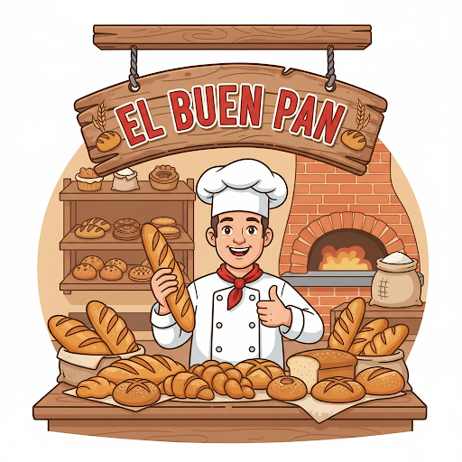
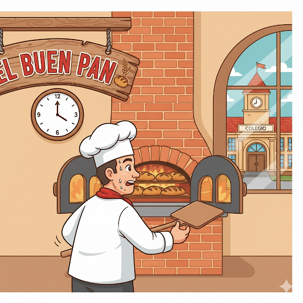

El misterio de la pandearía El Buen Pan
Ayuda a resolver el misterio
En la panadería "El Buen Pan", el panadero jefe, Don Manuel, se enfrenta a un nuevo reto. El colegio del barrio le ha hecho un pedido especial: necesitan 400 panes de tipo francés para un evento que se realizará en la tarde.

Don Manuel sabe que su horno tiene una capacidad para hornear 50 panes franceses cada 30 minutos. Su jornada de trabajo para preparar pedidos especiales es de 4 horas antes de que el colegio necesite los panes.

Don Manuel necesita saber si podrá cumplir con el pedido del colegio a tiempo.